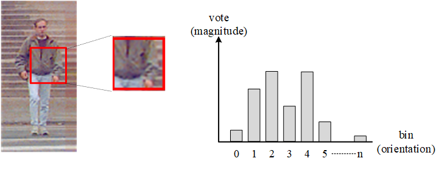

Brief Description: HOGs is a kind of texture features for describing the texture of a rectangular block and is widely used in computer vision and image processing, especially for object detection. HOGs represents the texture in a form of histogram of oriented gradients.
